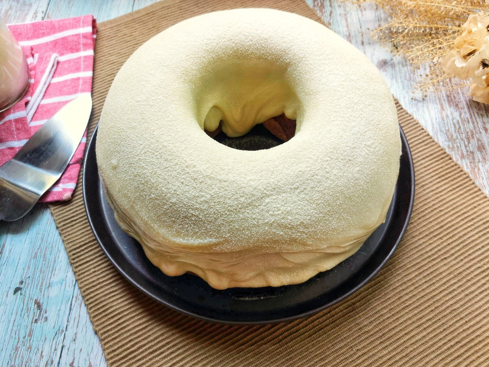

Voltar
Bolo com Cobertura de Ninho
BOLO SIMPLES COM COBERTURA DE NINHO
Serve 16 porções Preparo 80 min.

"Essa receita é realizada em um forma de 24cm de diâmetro.
Se quiser finalize polvilhando leite em pó sobre a cobertura.
E caso queira trazer mais cor e sabor ao bolo, sirva com morangos picados.
Fica uma delícia!"
Ingredientes
- 3 ovos
- 1 e 1/2 xícara de chá de açúcar
- 3/4 xícara de chá de óleo
- 1 xícara de chá de leite
- 2 xícaras de ché de farinha de trigo
- 1 colher de sopa de fermento químico em pó (fermento para bolo)
- 1 caixinha de leite condensado
- 1 caixinha de creme de leite
- 5 colheres de sopa de leite em ninho em pó
- 100 gramas de chantilly batido
Modo de Preparo
- Reúna todos os ingredientes
- No liquidificador, bata os ovos, o açucar, o óleo e o leite;
- Despeje a massa em um tigela;
- Misture a farinha aos poucos e finalize com o fermento;
- Coloque a massa em uma forma untada(Sujar ou sujar-se com manteiga ou desmoldante) e leve para assar em forno preaquecido a 180°C por cerca de 40 minutos;
- Para a corbertura, em uma panela, coloque o leite condensado, creme de leite e o leite em pó ninho;
- Leve ao fogo e espere engrossar, sempre mexendo;
- Deslique o fogo e espere o creme esfriar;
- Quando estiver em temperatura ambiente, misture o creme com o chantily;
- Com o bolo frio, espalhe a cobertura em cima;
Agora é só sevir! Bom apetite